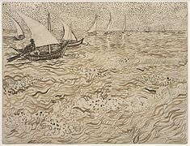

On connaît environ un millier de feuilles de l'artiste94. Les techniques utilisées sont le crayon, la
plume, l'encre, la craie, parfois mis en couleur à l'aquarelle. À partir de 1888, il emploie
préférentiellement la plume de roseau (calame)94. Plusieurs de ses lettres comportent des croquis,
reprenant certains tableaux95.

Un carnet dont l’authenticité n'est pas confirmée
Le 17 novembre 2016, le fac-similé d'un carnet contenant 65 dessins qui auraient été réalisés entre
février 1888 et mai 1890 est publié par Bogomila Welsh-Ovcharov, commissaire de deux expositions du
peintre96. Un autre spécialiste de l'artiste, Ronald Pickvance, appuie la thèse de l’authenticité de la
découverte97.
Le musée Van Gogh d'Amsterdam, par la voix de son conservateur en chef Louis Van Tilborgh, considère ce
corpus comme une imitation postérieure aux années 197098. Les experts ont conclu après examen des
dessins et comparaison avec la collection que le musée possède, que ceux-ci contiennent des erreurs
topographiques, et que l'encre utilisée, de couleur brunâtre, n'a jamais été utilisée par Van Gogh dans
ses dessins99